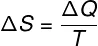

O que é Entropia
Tópicos deste Artigo
- Exemplos
- Definição matemática de Entropia
"Qual das configurações abaixo é mais provável de ser observada para um arranjo de tijolos com o passar do tempo?"
"Definição matemática de Entropia"
"A definição matemática de entropia é dada pela razão da quantidade de calor (Q) transferida entre duas porções de um sistema termicamente isolado, em Joules (J), por sua temperatura absoluta, em Kelvin (K):"

"ΔS = Entropia (J/K)
ΔQ = Quantidade de calor (J)
T = Temperatura absoluta (K)"
"A definição apresentada acima é válida para processos isotérmicos, ou seja, em que haja trocas de calor tão pequenas (ou lentas) que não sejam capazes de mudar a temperatura do sistema. A definição de entropia é, portanto, infinitesimal (parte infinitamente pequena)."
Entropia
A entropia (do grego εντροπία, entropía), unidade [J/K] (joules por kelvin), é uma grandeza termodinâmica que mede o grau de liberdade molecular de um sistema, e está associado ao seu número de configurações (ou microestados), ou seja, de quantas maneiras as partículas (átomos, íons ou moléculas) podem se distribuir em níveis energéticos quantizados, incluindo translacionais, vibracionais, rotacionais, e eletrônicos. Entropia também é geralmente associada a aleatoriedade, dispersão de matéria e energia, e "desordem" (não em senso comum)[Nota 1] de um sistema termodinâmico. A entropia é a entidade física que rege a segunda lei da termodinâmica, a qual estabelece que a ela deve aumentar para processos espontâneos e em sistemas isolados. Para sistemas abertos, deve-se estabelecer que a entropia do universo (sistema e suas vizinhanças) deve aumentar devido ao processo espontâneo até o meio formado por sistema + vizinhanças atingir um valor máximo no estado de equilíbrio. Nesse ponto, é importante ressaltar que vizinhanças se entende como a parte do resto do universo capaz de interagir com o sistema, através de, por exemplo, trocas de calor.
A segunda lei da termodinâmica foi primeiramente relacionada historicamente com processos cíclicos que convertiam calor em trabalho. Percebeu-se que energia térmica (calor) não poderia ser completamente convertida em trabalho em máquinas térmicas de motor perpétuo, sempre havendo a necessidade de perda de uma quantidade mínima de calor para um reservatório frio para que o sistema voltasse ao estado original. Dessa maneira, a variação de entropia de um processo está relacionada com a parcela de energia que não pode ser transformada em trabalho em transformações termodinâmicas a dada temperatura. Por esse fato, a mensuração da variação de entropia está diretamente relacionada a processos reversíveis, uma vez que processos no equilíbrio (ou mais próximos possíveis às condições de equilíbrio) estão associados com a máxima energia que um sistema pode perder para as vizinhanças na forma de trabalho (chamado de trabalho máximo ou trabalho útil). Portanto a energia "não disponível" é o mínimo valor que não pode ser descartado na forma de calor reversível em um processo que ocorre espontaneamente. Em outras palavras, a variação de entropia mede o grau de irreversibilidade de um processo.